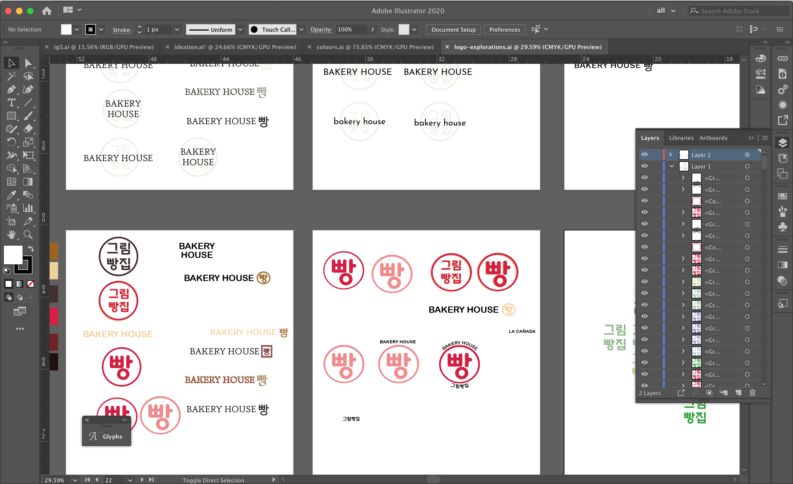
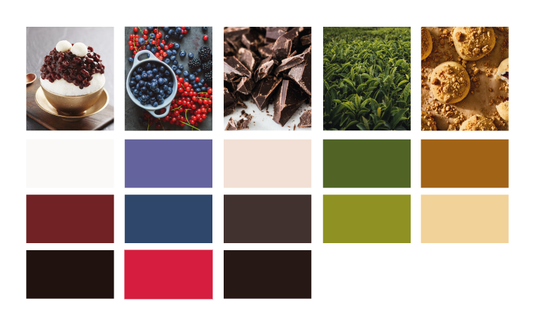
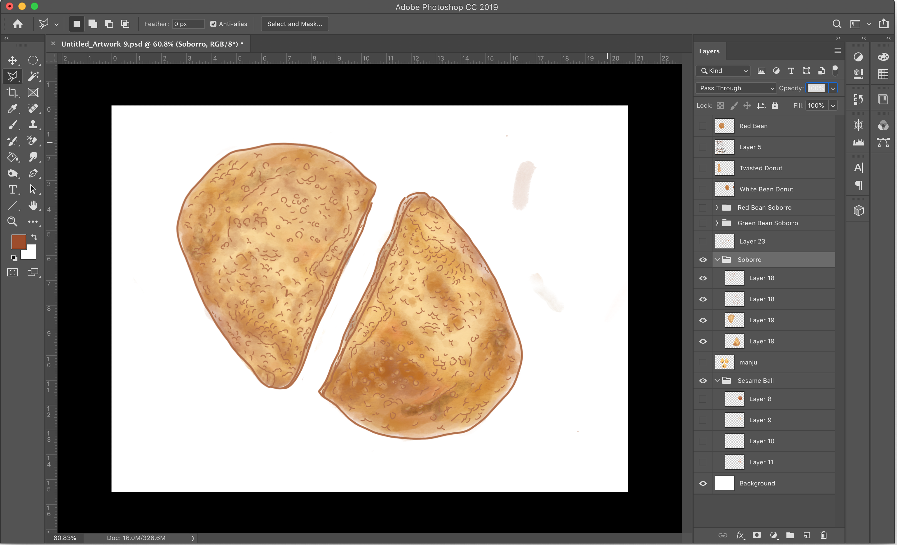
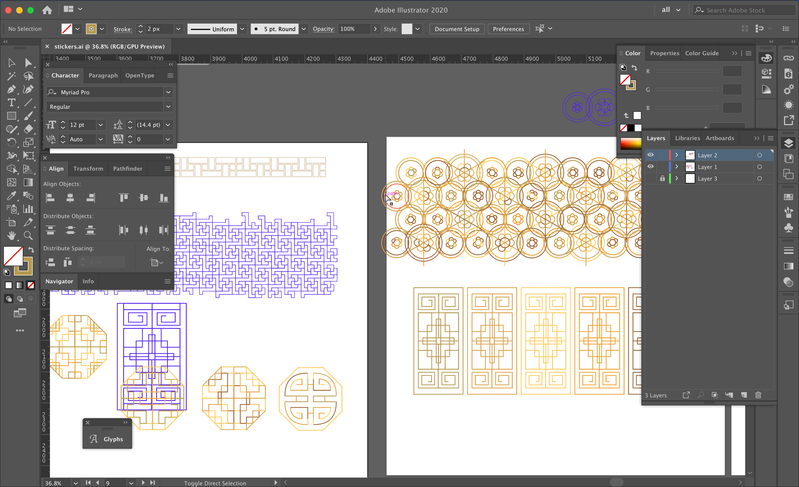
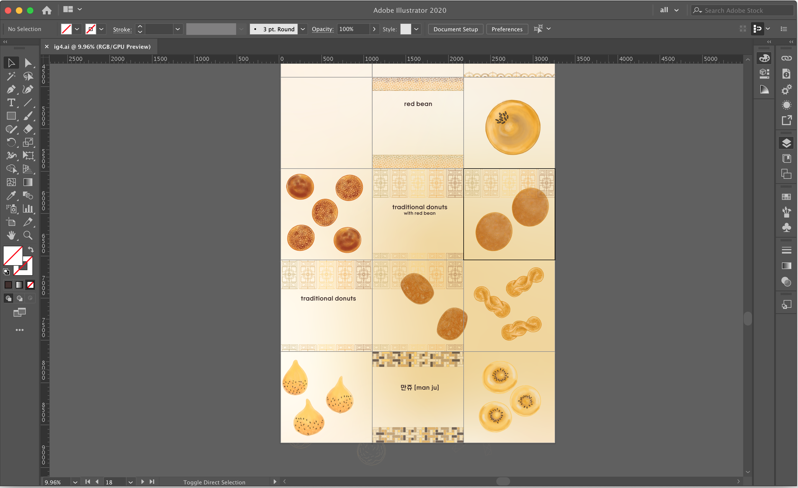
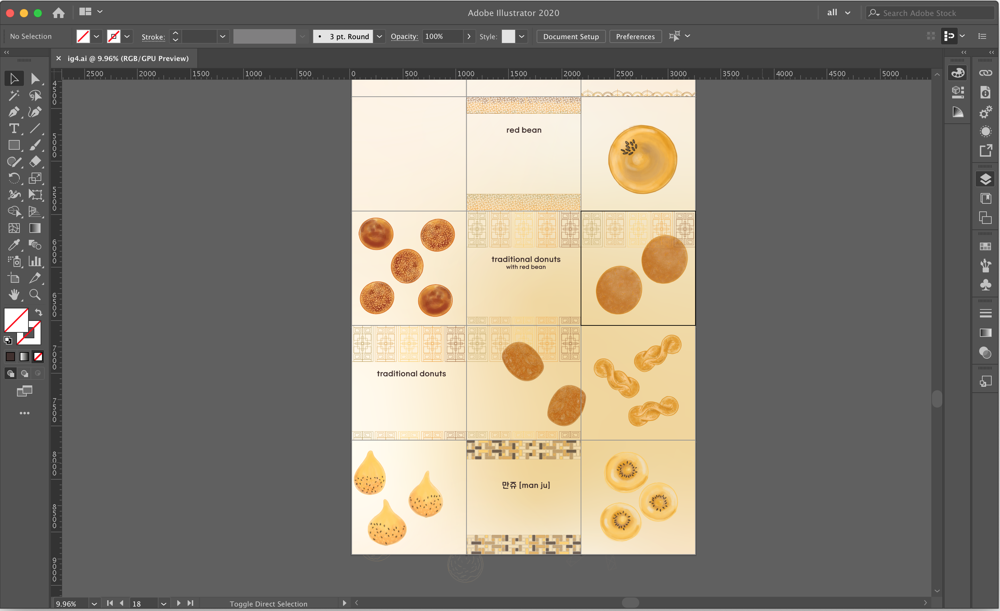
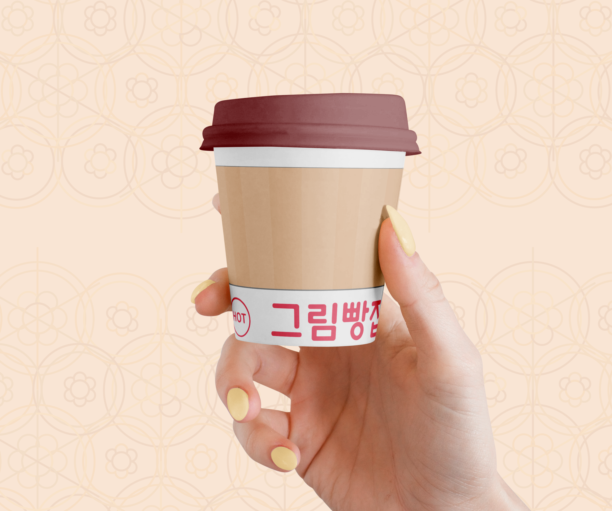
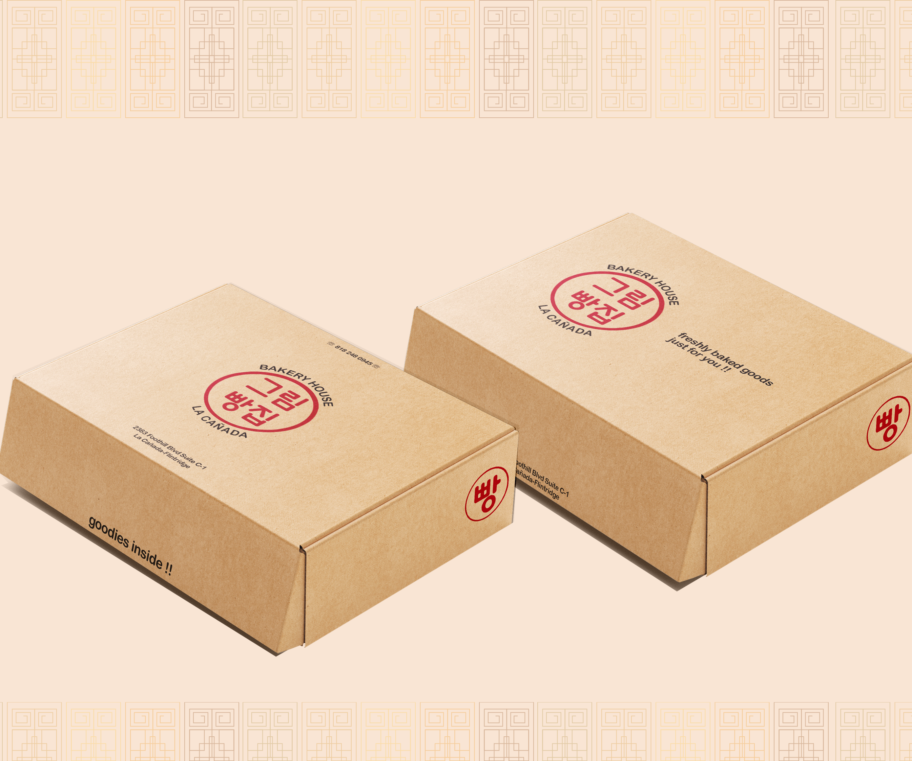
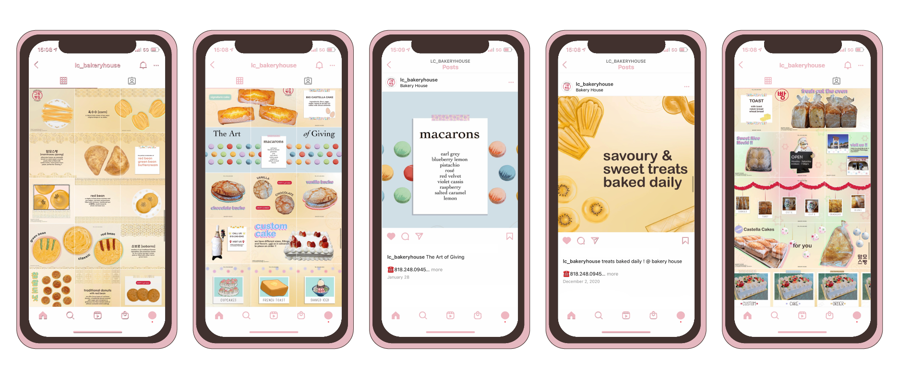

Bakery House is a mom & pop Korean bakery in the suburds of Los Angeles. My focus is to create any sort of visual and digital media that they might need. Ranging from posters, menu designs to crating their online presence through Instagram and their website.
Process
   
 

As a their Visual Designer I started by learning about them and their products. What it takes to create fresh baked goods every day and what it means for them to share their culture and traditions with others. For their visual language, I first started by creating a new logo and a colour palette that expresses that warmth and just yamminess of thier baked goods. From there I delve into creating assets for both the site and their Instagram.
 